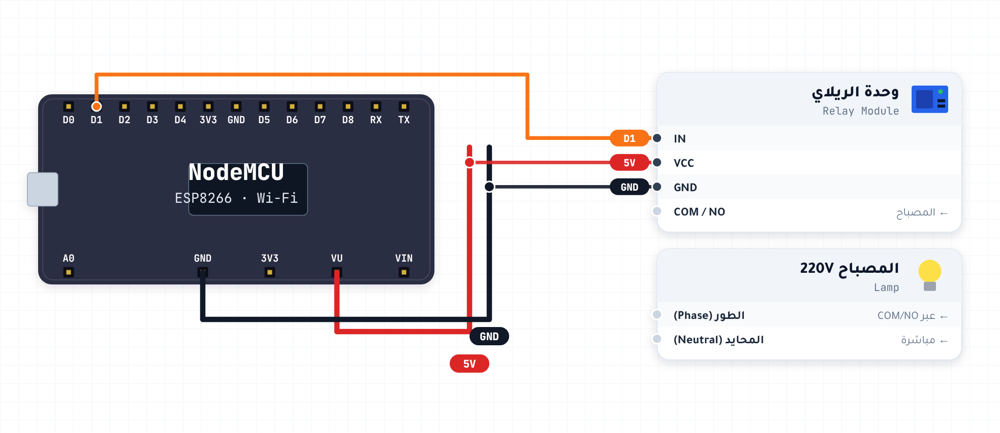

▶فيديو الشرح
لوحة NodeMCU تنشئ صفحة ويب تتحكم منها في المصباح من هاتفك عبر الواي فاي.
1المكونات
NodeMCUboardوحدة الريلايRelay Moduleالمصباح 220VLampأسلاك توصيلJumper Wiresلوحة تجاربBreadboard
2مخطط التوصيل

اضغط على المخطط لتكبيره · نسخة SVG عالية الدقة
| القطعة | الطرف | يوصل إلى |
|---|---|---|
| وحدة الريلاي | IN | D1 |
| وحدة الريلاي | VCC | 5V |
| وحدة الريلاي | GND | GND |
| وحدة الريلاي | COM / NO | المصباح |
| المصباح 220V | الطور (Phase) | عبر COM/NO |
| المصباح 220V | المحايد (Neutral) | مباشرة |
3الكود
المكتبات المطلوبة (من Arduino IDE ← Sketch ← Include Library ← Manage Libraries):
- لوحات ESP8266 (Boards Manager → esp8266)
/* المستوى المتقدم — المشروع 2: التحكم بالمنزل عبر Wi-Fi (NodeMCU ESP8266) كتاب: 38 مشروع في شهر — لؤي النصري (@robotlouay) التجهيز: أضف لوحات ESP8266 في Arduino IDE (Boards Manager → esp8266) واختر "NodeMCU 1.0". التوصيل: الريلاي: VCC → VU (5V من USB) GND → GND IN → D1 (GPIO5) الاستعمال: افتح Serial Monitor (115200) لترى عنوان IP، ثم افتحه في متصفح الهاتف (الهاتف على نفس شبكة الواي فاي). */ #include <ESP8266WiFi.h> #include <ESP8266WebServer.h> const char* WIFI_NAME = "اسم_الشبكة"; // ← اكتب اسم شبكتك const char* WIFI_PASS = "كلمة_السر"; // ← وكلمة السر const int RELAY_PIN = D1; // D1 = GPIO5 ESP8266WebServer server(80); bool relayOn = false; String page() { String s = "<!DOCTYPE html><html dir='rtl'><head><meta charset='utf-8'>"; s += "<meta name='viewport' content='width=device-width,initial-scale=1'>"; s += "<title>المنزل الذكي</title><style>"; s += "body{font-family:sans-serif;text-align:center;background:#0f172a;color:#fff;padding-top:40px}"; s += "a{display:inline-block;margin:12px;padding:18px 40px;border-radius:14px;color:#fff;text-decoration:none;font-size:22px}"; s += ".on{background:#16a34a}.off{background:#dc2626}</style></head><body>"; s += "<h1>التحكم في المصباح</h1><p>الحالة: <b>"; s += relayOn ? "مشتعل" : "مطفأ"; s += "</b></p><a class='on' href='/on'>تشغيل</a><a class='off' href='/off'>إطفاء</a>"; s += "</body></html>"; return s; } void handleRoot() { server.send(200, "text/html; charset=utf-8", page()); } void handleOn() { relayOn = true; digitalWrite(RELAY_PIN, HIGH); handleRoot(); } void handleOff() { relayOn = false; digitalWrite(RELAY_PIN, LOW); handleRoot(); } void setup() { Serial.begin(115200); pinMode(RELAY_PIN, OUTPUT); digitalWrite(RELAY_PIN, LOW); WiFi.mode(WIFI_STA); WiFi.begin(WIFI_NAME, WIFI_PASS); Serial.print("Connecting"); unsigned long t0 = millis(); while (WiFi.status() != WL_CONNECTED && millis() - t0 < 20000) { delay(500); Serial.print("."); } if (WiFi.status() == WL_CONNECTED) { Serial.print("\nOpen: http://"); Serial.println(WiFi.localIP()); } else { // لا توجد شبكة: ننشئ شبكة خاصة (Access Point) WiFi.mode(WIFI_AP); WiFi.softAP("Smart_Home_Robot", "123456789"); Serial.println("\nAP mode: connect to Smart_Home_Robot then open http://192.168.4.1"); } server.on("/", handleRoot); server.on("/on", handleOn); server.on("/off", handleOff); server.begin(); } void loop() { server.handleClient(); }
هذا المشروع يعتمد على مكتبات أو لوحات غير متوفرة في mBlock 5، لذلك نستعمل Arduino IDE. انسخ الكود من تبويب Arduino IDE.
4كيف يعمل؟
- NodeMCU يتصل بشبكة الواي فاي
- يُظهر عنوان IP في Serial Monitor
- تفتح العنوان من الهاتف
- زرا تشغيل/إطفاء يتحكمان في الريلاي
⚠ قبل توصيل الكهرباء: راجع كل سلك مع الجدول أعلاه، وتأكد من عدم وجود تماس بين 5V و GND. اختر اللوحة والمنفذ الصحيحين من قائمة Tools في Arduino IDE.